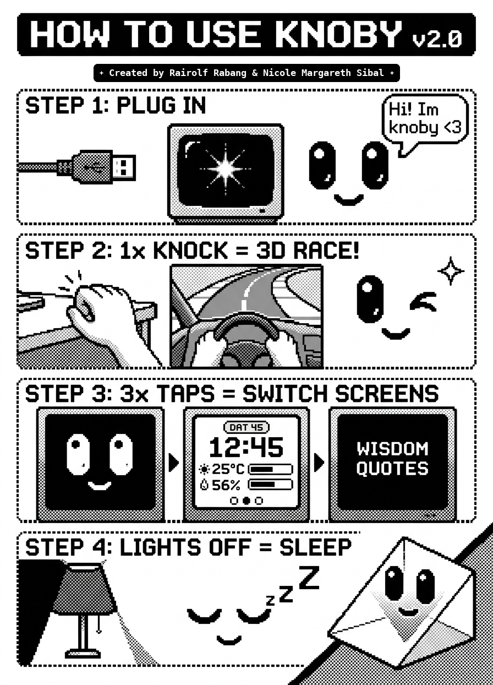

Connect your Arduino UNO to power. Watch the Retro CRT TV Bloom spark across the screen as Knoby awakens, blinks his big glossy eyes, and chats out his welcome speech bubble!
RETRO CRT BLOOM LIVING CHATTERFirmly tap or knock on the desk near Knoby. He instantly hops into his 3D Race Car Cockpit! Watch his cute paws steer through parabolic S-curves, hit turbo NITRO, and celebrate with his champion victory wink & twinkling star (`✦`)!
<240ms RESPONSE TILTING F1 STEERING VICTORY WINKKnock 3 times rapidly to cycle through Knoby's 3 functional screens:
• Screen 1: Living Pet Face & 3D Arcade Racing
• Screen 2: Smartwatch Dashboard HUD (Clock, Temp & Humidity with Live Level Bars)
• Screen 3: Daily Motivational Wisdom Quotes
The built-in light sensor detects when your bedroom lights go off. Knoby's eyelids droop into peaceful crescents as he drifts to sleep with floating `z Z Z` holograms. Turn lights back on, and he wakes up with an excited morning smile!
CIRCADIAN SENSOR 12s TAP PEEKPepper's Ghost Principle: High-contrast OLED graphics bounce off the semi-reflective 45° plate directly to your eyes, suspending Knoby's face in mid-air!
| OLED (I2C) | SDA ➔ A4 | SCL ➔ A5 (400kHz) |
| TILT KNOCK | Pin 2 (Internal Pull-Up) |
| LIGHT (LDR) | Pin A0 (10kΩ Divider) |
| DHT11 TEMP | Pin 4 (1-Wire Digital) |
| POWER | 5V USB / 9V DC Barrel Jack |
Ready to print or embed into your project report & case study!
